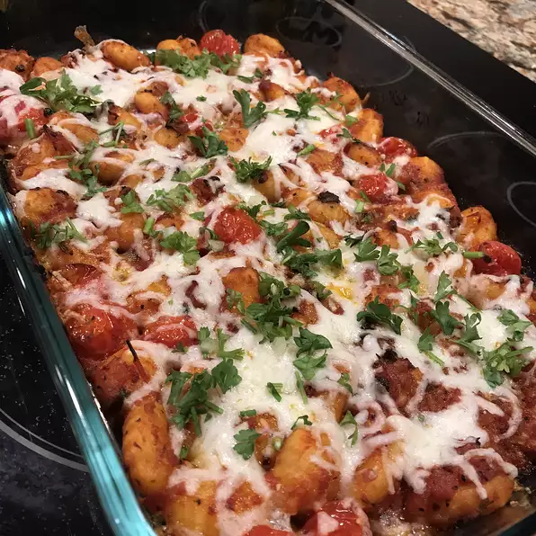

Gnocchi Bake

Desciption
A quick and easy blend of gnocchi, sausage, cheese, and your favorite
spaghetti sauce baked together for a hearty casserole.
Ingredients:
- 1 (18 ounce) package frozen or fresh gnocchi
- 1 pound bulk Italian sausage
- 1 (14 ounce) jar spaghetti sauce
- 1 ½ cups shredded mozzarella cheese
Steps
- Preheat the oven to 350 degrees F (175 degrees C).
-
Bring a large pot of lightly salted water to a boil. Add gnocchi, and
cook until tender, 5 to 8 minutes.
-
Meanwhile, crumble the sausage into a skillet over medium-high heat.
Cook and stir until evenly browned. Drain grease, and stir in the
spaghetti sauce. Remove from heat, and carefully mix in the cooked
gnocchi and half of the mozzarella cheese. Transfer to a casserole dish.
Sprinkle the remaining cheese on top.
-
Bake for 15 to 20 minutes in the preheated oven, until the cheese is
melted and the sauce is bubbly.